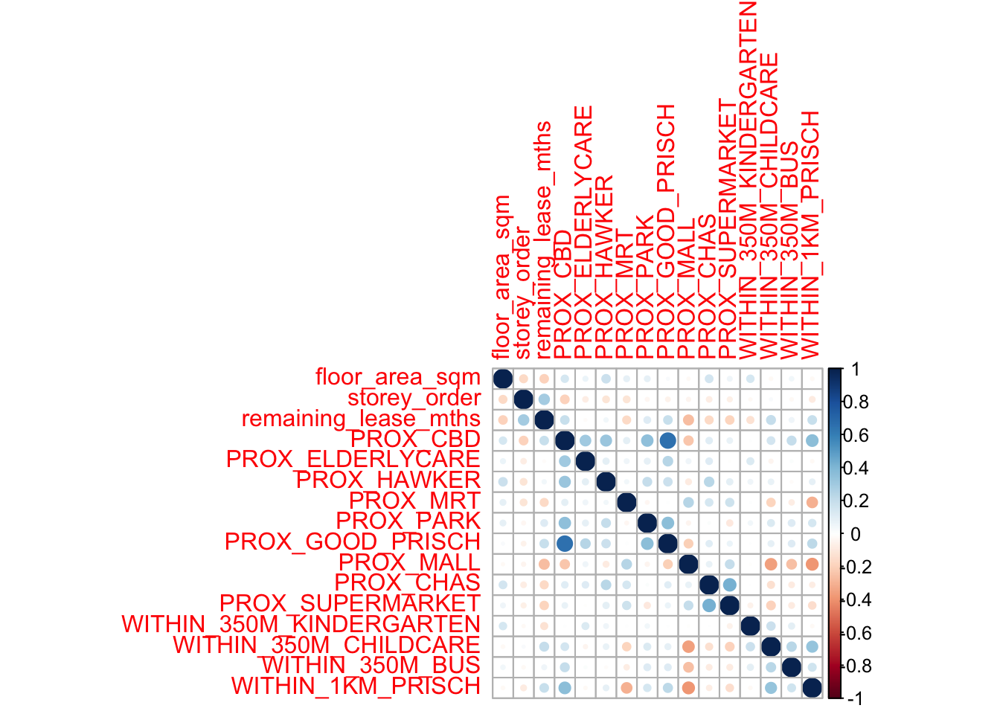

pacman::p_load(sf, spdep, GWmodel, SpatialML, tidyverse, tmap, ggpubr, olsrr, devtools, tidymodels)
#if tidymodels does not load, you can just rsampleIn Class Exercise 9
Note
Use the MPSZ-2019 Dataset for Take Home Exercise 3
1 Loading the packages
2 Preparing Data
2.1 Reading data file from RDS
Reading the input data sets. It is in a simple data frame
mdata <- read_rds("data/aspatial/mdata.rds")2.2 Data Sampling
The entire data are split into training and test data sets
set.seed(1234)
resale_split <- initial_split(mdata,
prop = 6.5/10)
train_data <- training(resale_split)
test_data <- testing(resale_split)write_rds(train_data, "data/model/train_data.rds")
write_rds(test_data, "data/model/test_data.rds")3 Computing Correlation Matrix
mdata_nogeo <- mdata %>%
st_drop_geometry()
corrplot::corrplot(cor(mdata_nogeo[, 2:17]))
train_data <- read_rds("data/model/train_data.rds")
test_data <- read_rds("data/model/test_data.rds")
Note
We are not too particular on the R Square, we focus more on the Residual Standard Error.
price_mlr <- lm(resale_price ~ floor_area_sqm + storey_order + remaining_lease_mths + PROX_CBD + PROX_ELDERLYCARE + PROX_HAWKER + PROX_MRT + PROX_PARK + PROX_MALL + PROX_SUPERMARKET + WITHIN_350M_KINDERGARTEN + WITHIN_350M_CHILDCARE + WITHIN_350M_BUS + WITHIN_1KM_PRISCH,
data = train_data)
summary(price_mlr)
Call:
lm(formula = resale_price ~ floor_area_sqm + storey_order + remaining_lease_mths +
PROX_CBD + PROX_ELDERLYCARE + PROX_HAWKER + PROX_MRT + PROX_PARK +
PROX_MALL + PROX_SUPERMARKET + WITHIN_350M_KINDERGARTEN +
WITHIN_350M_CHILDCARE + WITHIN_350M_BUS + WITHIN_1KM_PRISCH,
data = train_data)
Residuals:
Min 1Q Median 3Q Max
-205193 -39120 -1930 36545 472355
Coefficients:
Estimate Std. Error t value Pr(>|t|)
(Intercept) 107601.073 10601.261 10.150 < 2e-16 ***
floor_area_sqm 2780.698 90.579 30.699 < 2e-16 ***
storey_order 14299.298 339.115 42.167 < 2e-16 ***
remaining_lease_mths 344.490 4.592 75.027 < 2e-16 ***
PROX_CBD -16930.196 201.254 -84.124 < 2e-16 ***
PROX_ELDERLYCARE -14441.025 994.867 -14.516 < 2e-16 ***
PROX_HAWKER -19265.648 1273.597 -15.127 < 2e-16 ***
PROX_MRT -32564.272 1744.232 -18.670 < 2e-16 ***
PROX_PARK -5712.625 1483.885 -3.850 0.000119 ***
PROX_MALL -14717.388 2007.818 -7.330 2.47e-13 ***
PROX_SUPERMARKET -26881.938 4189.624 -6.416 1.46e-10 ***
WITHIN_350M_KINDERGARTEN 8520.472 632.812 13.464 < 2e-16 ***
WITHIN_350M_CHILDCARE -4510.650 354.015 -12.741 < 2e-16 ***
WITHIN_350M_BUS 813.493 222.574 3.655 0.000259 ***
WITHIN_1KM_PRISCH -8010.834 491.512 -16.298 < 2e-16 ***
---
Signif. codes: 0 '***' 0.001 '**' 0.01 '*' 0.05 '.' 0.1 ' ' 1
Residual standard error: 61650 on 10320 degrees of freedom
Multiple R-squared: 0.7373, Adjusted R-squared: 0.737
F-statistic: 2069 on 14 and 10320 DF, p-value: < 2.2e-16write_rds(price_mlr, "data/model/price_mlr.rds")4 Converting the sf data frame to Spatial Point Data Frame
train_data_sp <- as_Spatial(train_data)
train_data_spclass : SpatialPointsDataFrame
features : 10335
extent : 11597.31, 42623.63, 28217.39, 48741.06 (xmin, xmax, ymin, ymax)
crs : +proj=tmerc +lat_0=1.36666666666667 +lon_0=103.833333333333 +k=1 +x_0=28001.642 +y_0=38744.572 +ellps=WGS84 +towgs84=0,0,0,0,0,0,0 +units=m +no_defs
variables : 17
names : resale_price, floor_area_sqm, storey_order, remaining_lease_mths, PROX_CBD, PROX_ELDERLYCARE, PROX_HAWKER, PROX_MRT, PROX_PARK, PROX_GOOD_PRISCH, PROX_MALL, PROX_CHAS, PROX_SUPERMARKET, WITHIN_350M_KINDERGARTEN, WITHIN_350M_CHILDCARE, ...
min values : 218000, 74, 1, 555, 0.999393538715878, 1.98943787433087e-08, 0.0333358643817954, 0.0220407324774434, 0.0441643212802781, 0.0652540365486641, 0, 6.20621206270077e-09, 1.21715176356525e-07, 0, 0, ...
max values : 1186888, 133, 17, 1164, 19.6500691667807, 3.30163731686804, 2.86763031236184, 2.13060636038504, 2.41313695915468, 10.6223726149914, 2.27100643784442, 0.808332738794272, 1.57131703651196, 7, 20, ... 4.1 Computing Adaptive Bandwidth
5 Preparing Coordinate Data
5.1 Extracting coordinates data
Note
This extracts out the coordinates and store it
coords <- st_coordinates(mdata)
coords_train <- st_coordinates(train_data)
coords_test <- st_coordinates(test_data)coords_train <- write_rds(coords_train, "data/model/coords_train.rds")
coords_test <- write_rds(coords_test, "data/model/coords_test.rds")5.2 Dropping Geometry Field
train_data <- train_data %>%
st_drop_geometry()6 Calibrating Random Forest
set.seed(1234)
rf <- ranger(resale_price ~ floor_area_sqm + storey_order + remaining_lease_mths + PROX_CBD + PROX_ELDERLYCARE + PROX_HAWKER + PROX_MRT + PROX_PARK + PROX_MALL + PROX_SUPERMARKET + WITHIN_350M_KINDERGARTEN + WITHIN_350M_CHILDCARE + WITHIN_350M_BUS + WITHIN_1KM_PRISCH,
data = train_data)
Note
This only works without the geometry file.
print(rf)
Note
For performance, Look at MSE as the main source Error. We will need to square-root the MSE.
7 Calibrating Geographically weighted Random Forest
Note
We need to look at the grd documentation.
set.seed(1234)
gwRD_adaptive <- grf(formula = resale_price ~ floor_area_sqm + storey_order + remaining_lease_mths + PROX_CBD + PROX_ELDERLYCARE + PROX_HAWKER + PROX_MRT + PROX_PARK + PROX_MALL + PROX_SUPERMARKET + WITHIN_350M_KINDERGARTEN + WITHIN_350M_CHILDCARE + WITHIN_350M_BUS + WITHIN_1KM_PRISCH,
dframe = train_data,
bw=55,
kernel = "adaptive",
coords = coords_train)
Note
How do we determine the Bandwidth, we can borrow the bandwidth. The better methods is to calculate with grf.bw().
There are 2 parts to the result, the first section is for explanatory model. the second section is for predictor model. We are looking at AIC model to compare.
7.1 Saving the Model
write_rds(gwRD_adaptive, "data/model/gwRF_adaptive.rds")7.2 Read the model
gwRF_adaptive <- read_rds("data/model/gwRF_adaptive.rds")We can view the information and load it into a data frame so that we can report it.
vi_df <- as.data.frame(gwRF_adaptive$Global.Model$variable.importance)
vi_df7.3 Predicting the using the test data
We will combine the test data with its corresponding coordinates data
test_data <- cbind(test_data, coords_test) %>%
st_drop_geometry()7.3.1 Predicting with test data
gwRF_ored <- predict.grf(gwRF_adaptive,
test_data,
x.var.name="X",
y.var.name="Y",
local.w=1,
global.w=0)write_rds(gwRF_ored, "data/model/gwRF_pred.rds")7.3.2 Converting to the predicting output into a data frame.
gwRF_pred <- read_rds("data/model/gwRF_pred.rds")gwRF_pred_df <- as.data.frame(gwRF_pred)
Note
We would need to plot it out to see the outliers..